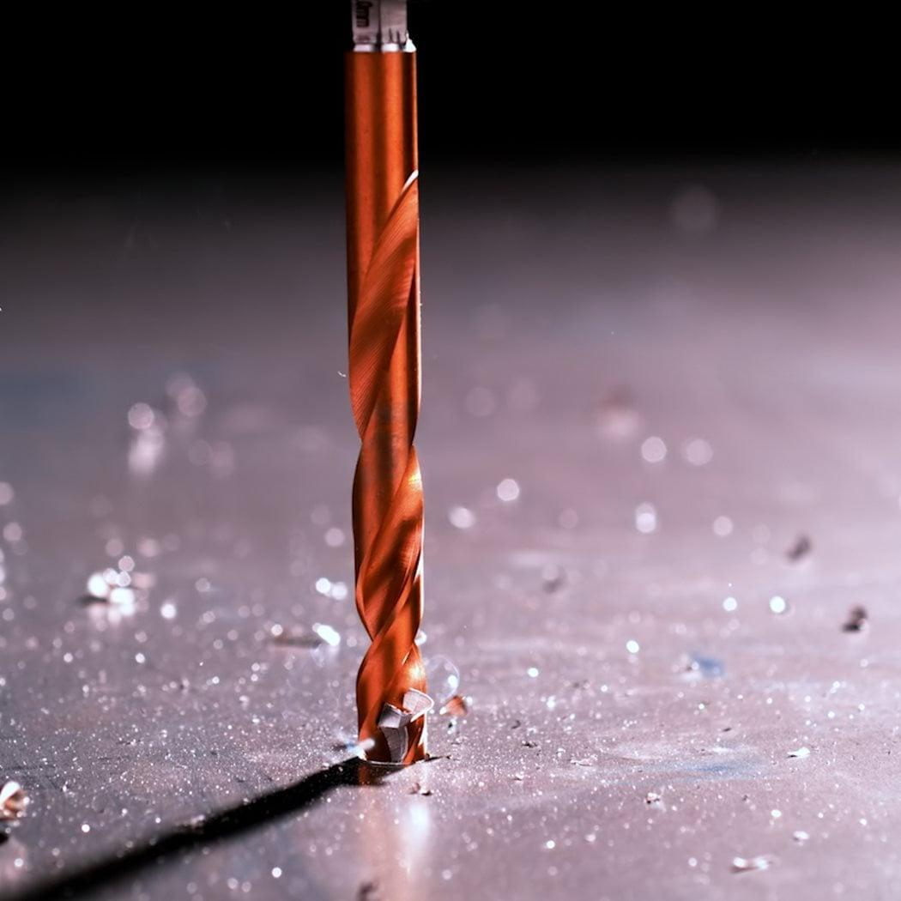
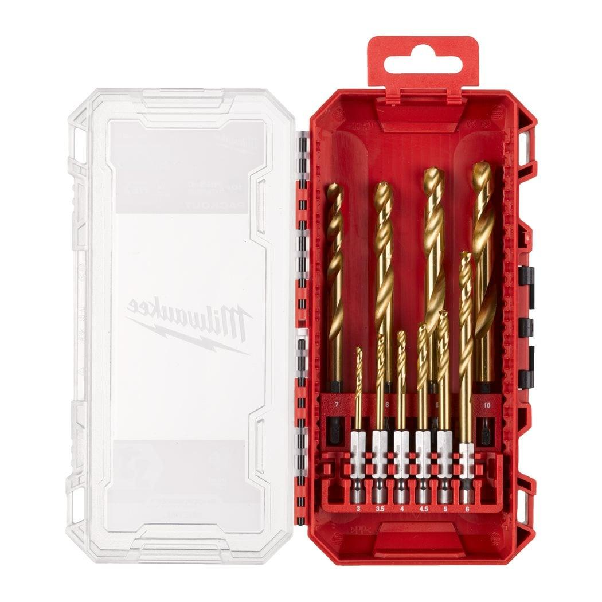

Milwaukee | Shockwave HSS-G Tin Red Hex Set - 10pc Metal Drill
4932493865


Features
Impact rated drill bit with ¼″ hex shank optimised for impact drivers.
Titanium Nitride coating dispenses heat and makes the drill bit suitable for use also in high speed.
QUAD EDGE™ Tip: unique combination of 135° split point and four cutting edges: 135° split point allows for precise & fast drilling start without walking. Four cutting edges create smaller chips to prevent heat build up for longer life.
Variable flute geometry: For faster material ejection. Helps the bit run cooler and prevent it from burning out faster.
Enhanced tapered web: Wider core towards the shank of the drill bit. Strengthens the core to increase overall flute durability.